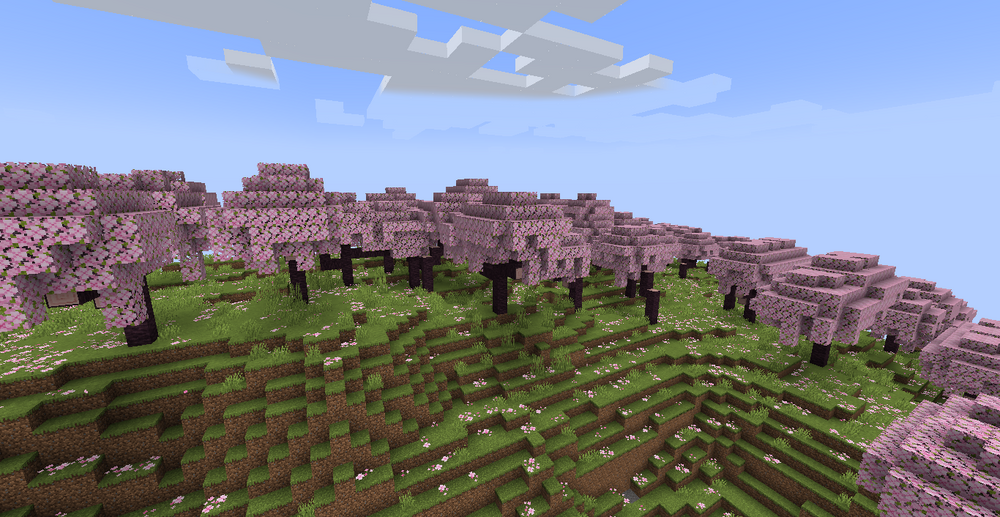
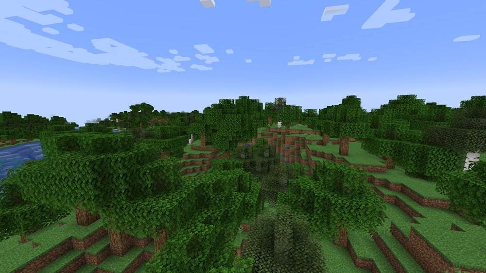
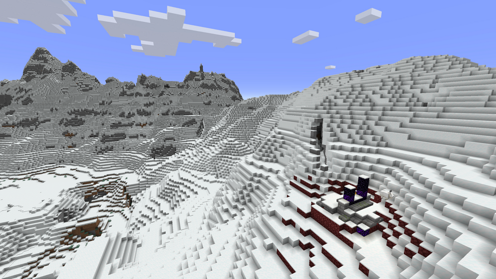
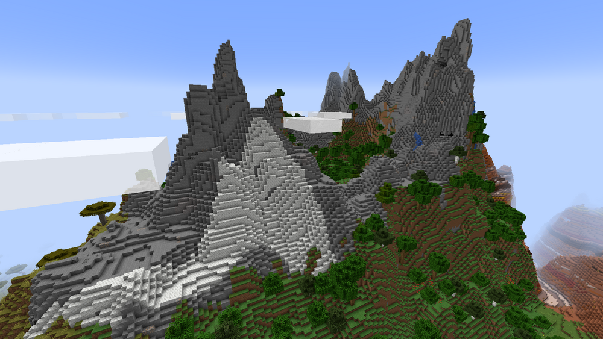
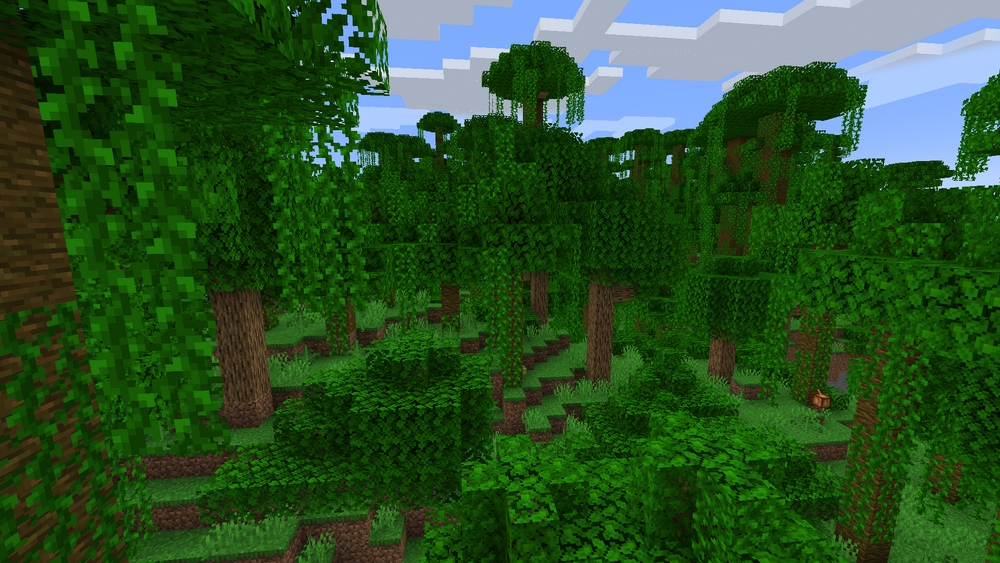
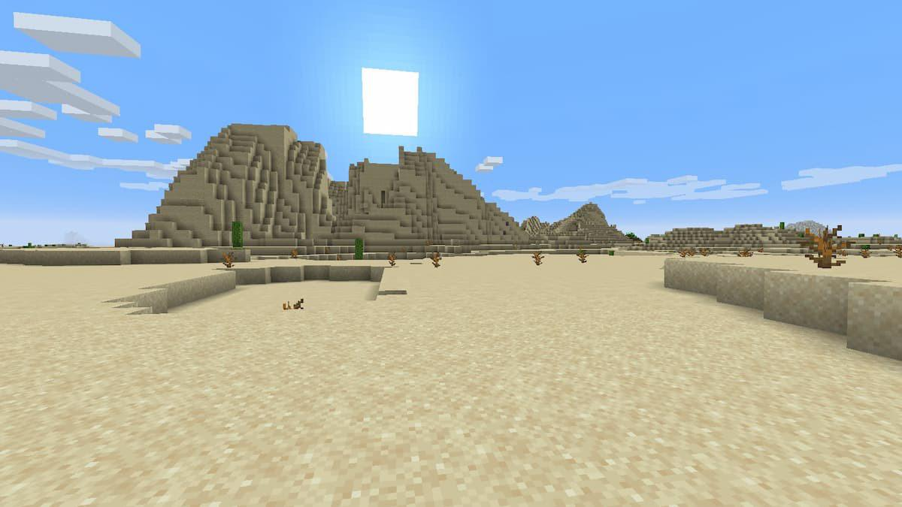
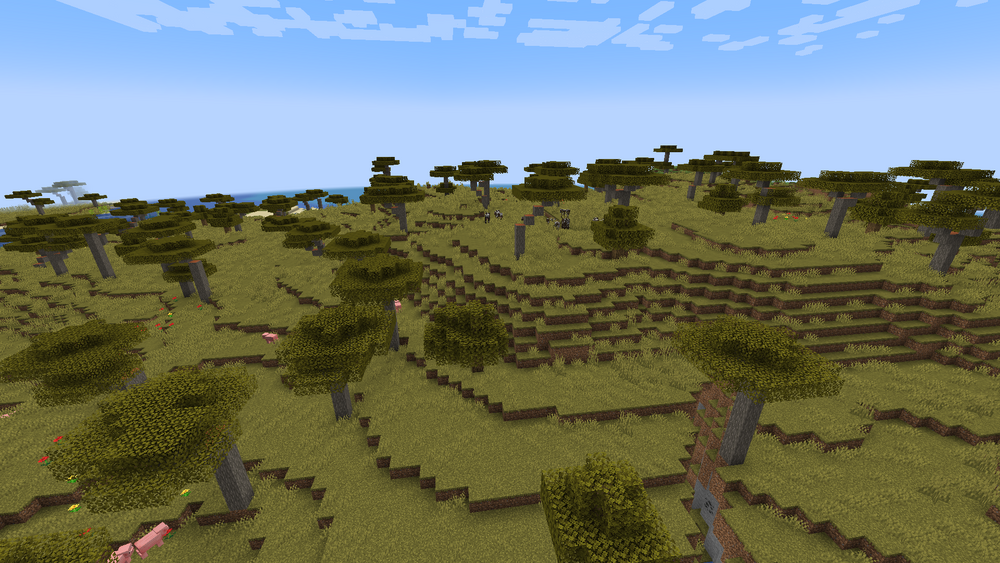
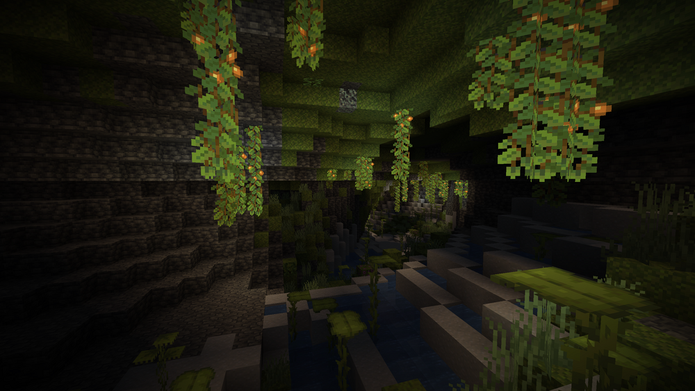
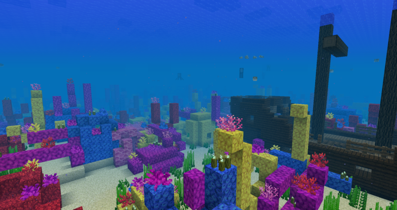

Minecraft has tons of different biomes. Biomes are essentially different enviornments or climates that generate throughout the game.
These biomes can have different trees, flowers, mobs, and generation types. Below is a list of just some of the many biomes that Minecraft has to offer.
Cherry Grove

The cherry grove contains pink cherry trees and pink flower petals that litter the grass.
It also has an animation of falling pink flower petals. It also tends to be a hillier biome than others.
Forest

The forest biome is a relatively flat biome, occasionally having small hills. It has birch and oak trees
along with dandelions and poppys. It also can have mushrooms and ferns. Cows, pigs, chickens, and sheep
are common in the forest.
Snowy Slopes

Snowy slopes are completely covered in snow. It's also very mountainous and
contains no vegetation besides the occasional spruce tree. Although you may not encounter cows, pigs, chickens, or
sheep in this biome, you may run into polar bears or wolves.
Stony Peaks

As the name suggests, this biome is mountious and has sharp peaks. Most of the biome is made up of stone, although it can
contain other blocks such as grass and calcite, as seen in the picture. In this biome, you may find yourself
running into goats. Another special feature of the stonky peaks biome is emeralds. Emeralds only spawn in mountainious
biomes and the sharp peaks and cliffs make it an ideal biome for finding emeralds!
Jungle

The jungle contains jungle and oak trees as well as oak bushes and bamboo. This biome is much denser with vegetation than other biomes.
It also contains a unique structure, the jungle temple, which contains loot. There are also two passive mobs that live in the
jungle, the ocelot and parrots. Both of these mobs can be tamed to become your pet!
Desert

Similarly to the jungle, the desert has a unique structure, the desert temple. This structure also contains loot.
This biome is characterized by its sandy landscape. It typically is flat with small rolling hills. Although it doesn't
contain much vegetation, it has cacti and dead bushes. The only animals that spawns in the desert are bunnies.
Savanna

The savanna has a flat and hilly landscape. This biome contains the acacia. The savanna also spawns various animals,
such as the horse, donkey, and llama. These all can be tamed and ridden using a saddle!
Lush Caves

Lush caves are one of the cave biomes in Minecraft. It's characterized by its lush vegetation. This includes moss,
drip leaf, glow berries, grass, and spore blossoms. It also has unique mobs, including glow squids and axolotls. It has clay
and rooted dirt blocks along with lots of small ponds.
Warm Ocean

Warm oceans can spawn in coral reefs, which contain various types of coral. It also has many different types and colors
of tropical fish as well as dolphins, sea turtles, and puffer fish. They also contain kelp, sea grass, and sea pickles, which give off a glow.
It also has a brighter blue color compared to other ocean biomes.
In this image, you can see a shipwreck, a structure that spawns throughout different ocean biomes that also contains loot chests!